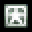

一旦打倒敌人就会出现道具。

|
火力提升道具 能使Power增加1。最大为128。
| 
火力提升道具大 | 能使Power增加8。最大为128。
| 
提升至最大火力道具 | 能使火力一次提升至最大。
| 
得分道具 | 能够得到分数。越靠近画面上方取得分就越多， 最多能得到和画面左下显示的数字相同的分数。
| 
SpellCard道具 | 能使SpellCard数增加1。
| 
奖励道具 | 能够奖励一条命。

|
Bouns道具 | 能得到若干分数。
| 
刻符道具 | 后述。
| 
得分道具小 | 能够得到得分道具分数的十分之一。 在最大火力状态下所有的P道具都会变化成这个道具。 |
在这些当中，Bouns道具和刻符是只要出现就会自动被玩家吸收的道具。 除此以外的道具必须进行道具收集才能自动被吸收。
让自机角色移动至画面上方，便可以自动回收画面上的所有道具。 在非最大火力的状态下，需要妖怪操术。 在最大火力时，人类操术也可以进行收集。